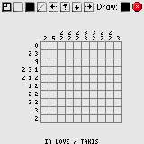

Griddler lets you play Nonograms, Pic-a-pix's, PictureLogics, Tsunamies etc. etc. A set of default puzzles are included with Griddler in the PlayTsunami.pdb file. Also, a program to create puzzles are included.
Installation of Griddler is like installing any other Palm OS program:
When the synchronization is done you will have a 'Griddler' icon in the Unfiled category on your Palm PDA. Feel free to move Griddler to another category.
On the main screen select a puzzle from the available puzzles. First select the puzzle database and then the puzzle. Then press Info to get brief information about the puzzle or press Play to play the puzzle.
Info screen - the Puzzle name, author name and author web site is shown.
On the game screen you have a few controls - from left to right:
If a puzzle doesn't fit the screen you can either tap the Switch button or you can drag the playfield around. The correctness of the puzzle is validated while playing. If you feel like forcing a validation you can do so from the menu.
Game - high display mode.